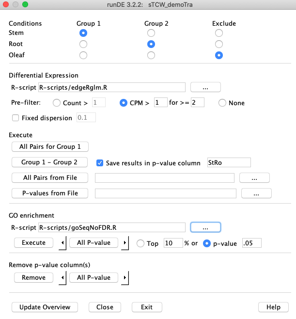
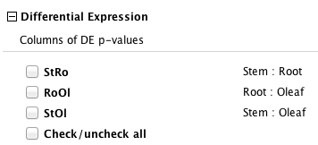
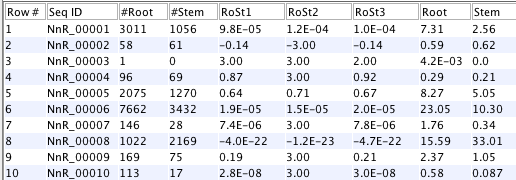

RunDE computes differential expression (DE) between conditions for an existing singleTCW database,
as follows:
EdgeR, DESeq2.
runDE writes the data to R variables, executes the R-script, then reads the results into sTCWdb.
GOseq.
sudo yum install R-develIf you do not have sudo privileges (sudo allows a general user to run some commands as the root user), you will need an administrator to do the install. Note, even if R is already installed, you probably still need to run this command to install the "devel" libraries, which are needed for the rJava package used by
runDE to interface with R.
This is all that you strictly need to do; however, unless you plan to run as root (not recommended),
or will be the only one running runDE, you will also want to set up R so that one user
can install packages to be used by all users (see R directory permissions). Note: you
do you need R to view the DE results with viewSingleTCW.
sudo cp external/libjri.so /usr/lib64Also use the file function to verify that the library is actually usable on your system. A 64-bit library is supplied, which will not work on 32-bit systems, or with 32-bit Java installed on 64-bit systems.
6/29/18: I updated my R biocLite on Linux, and the rJava quite working. In R, I ran install.packages("rJava"), then
modified runDE to set JPATH=/usr/lib64/R/library/rJava/jri, and it works now.
runDE
is covered in the R-scripts section.
The packages used by TCW can all be installed through the "biocLite" system of Bioconductor as follows:
| Package | Install | Version as of 13-Dec-151 | Note | Dependencies, e.g.2 | |||||
edgeR | biocLite("edgeR") | 3.12.0 | Used for demo | biocLite("locfit") | |||||
DESeq2 | biocLite("DESeq2")| 1.10.0 | | sudo yum install libxml2-devel
| GOSeqbiocLite("goseq") | 1.22.0 | | sudo yum install curl-devel
| |
2. Example: demoTra | Go to top |
From the command line, type:
>runDE tra
Or, if you type runDE with no arguments, the sTCW graphical chooser will appear
with all sTCW databases listed; select the demoTra database.
Either way, this brings up the runDE interface shown at right.
Define a pairwise comparison by selecting "Stem" for Group 1 and "Root" for Group 2, as shown. Check the box Save results in p-value column, the text box will display the column name "StRo", which can be changed.
Assuming you have installed Execute Group 1 - Group 2. The default is to run the edgeRglm.R script. The output will be as follows:
5 Stem replicates
5 Root replicates
Collecting count data (may take several minutes)
Using CPM filter > 1 for >= 2
1 filtered sequences
Assigning R variables
gc: GC values of sequences
rowNames: sequences (row) names
grpNames: group (column) names
repNames: replicate names
counts: counts of sequences
countData <- array(counts,dim=c(210,10))
rm(counts)
rownames(countData) <- rowNames
nGroup1 <- 5
nGroup2 <- 5
Start R-script
source('R-scripts/edgeRglm.R')
Loading required package: limma
Using traditional glm (quasi-likelihood F-tests)
results
rowNames
R-script done
Number of DE results:
<1e-5 <1e-4 <0.001 <0.01 <0.05
6 14 21 40 66
Saving 210 scores for StRo
|
 |
runDE, which closed the java program but not R. Then do the following:
>q() Save workspace image? [y/n/c]: y RThis saves all variables written by
runDE and the scripts (in this case edgeRglm.R. By restarting R, you can now
explore the data, e.g.
> library(edgeR) > plotBCV(y) > plotMDS(y, labels=grpNames)
| View Results: To view the resulting p-values, run 'viewSingleTCW tra' from the command line, and click Columns. The column options has a section Differential Expression with the DE columns listed, e.g. the DE columns for demoTra are shown on the right. There is also a section for Conditions, which has the "Stem", "Root, and "Oleaf" column options. Select the desired columns ( e.g. "Stem", "Root", "StRo"); you may then select a filter (e.g. all sequences that have an absolute p-value < 0.05). Note in the below figure that if Stem < Root, the p-values StRo is negative, else it is positive. |
viewSingleTCW DE section with all pairs computed.

|
3.A Methods | Go to top |
If replicates are provided for a condition, they will automatically be used for the applicable
R packages (e.g., edgeR). All of the methods also work without replicates, but are likely to
overestimate DE.
Replicates should be biological replicates, i.e. sequencing from distinct individuals having the same treatments, rather than technical replicates, i.e. re-sequencing of the same individuals. Technical replicates can be input to TCW and will be used in the same way, but do not provide a useful estimate of variability.
R-scripts | Go to top |
gc: GC values of sequences
rowNames: sequences (row) names
grpNames: group (column) names
repNames: replicate names
counts: counts of sequences
countData <- array(counts,dim=c(210,10))
rm(counts)
rownames(countData) <- rowNames
nGroup1 <- 5
nGroup2 <- 5
The variables displayed with a ":" after them are assigned with the assign function, whereas the others are the exact assignment.
> head(countData)
[,1] [,2] [,3] [,4] [,5] [,6] [,7] [,8] [,9] [,10]
tra_001 1017 594 1222 1209 1315 378 1002 1649 826 1195
tra_002 272 239 431 400 368 101 206 151 109 185
tra_003 3830 5185 4847 4857 5451 1859 2506 1334 1541 2307
tra_004 1707 1088 2429 2210 2334 529 919 1103 810 1427
tra_005 479 369 439 444 565 114 192 151 232 351
tra_006 1122 923 1381 1320 1482 632 839 905 670 823
> grpNames
[1] "Stem" "Stem" "Stem" "Stem" "Stem" "Root" "Root" "Root" "Root" "Root"
The R script should put the p-values in the results variables, e.g.
> head(results) [1] 1.537634e-07 1.695981e-07 2.478791e-07 2.478791e-07 4.026519e-06 [6] 4.600047e-06The order should correspond to the input order; if changed, then change the order in rowNames to correspond.
An example script is:
# edgeR gln method unless no replicates
library(edgeR)
y <- DGEList(counts=countData,group=grpNames)
y <- calcNormFactors(y)
if (nGroup1==1 && nGroup2==1) {
writeLines("Using classic with fixed dispersion")
et <- exactTest(y, dispersion=disp)
res <- topTags(et, n=nrow(et), adjust.method="BH")
} else {
writeLines("Using tradional glm")
design <- model.matrix(~grpNames)
y <- estimateDisp(y, design)
fit <- glmQLFit(y,design)
qlf <- glmQLFTest(fit,coef=2)
res <- topTags(qlf, n=nrow(qlf), adjust.method="BH")
}
# Columns are: logFC logCPM F PValue FDR
results <- res$table$FDR
rowNames <- rownames(res)
3.B Options | Go to top |
edgeR (results in figure on lower right).
The first option filtered 1713 sequences and the second option filtered 7518;
with edgeR, the number of analyzed sequences effects the resulting DE value.
2 CPM (Counts per million) is defined below. |

The DE value (RoSt) is set to negative if Root<Stem.
The columns prefixed with '#' are the counts, which are used by the filters. The two columns at the end (Root and Stem) are the RPKM values. |
CPM (Counts per million) takes into account replicate size. There will be N replicates/samples to be analyzed, e.g. there are 10 replicates for the above dataset. The CPM value for a sequence j replicate i is computed (countj/Si)*1E6, where Si is sum of the counts for each replicate i.
To view the first 50 filtered sequences that do not have 'all' zero count values,
execute runDE with the ID or database name and a -v,
e.g. runDE NnR -v.
Using Count > 1, the following are the Counts of the filtered sequences.
NnR_00003 0 0 0 1 0 0 0 0 0 0 NnR_00016 0 0 0 0 0 0 1 0 0 0 NnR_00032 0 0 0 0 0 1 0 0 0 0 NnR_00090 1 0 0 1 0 1 0 0 0 0 NnR_00095 1 1 1 1 0 1 0 0 0 0 NnR_00112 0 0 0 1 0 0 0 0 0 0 ... 1713 filtered sequencesUsing CPM >=2 for >1 replicates, the following are the Counts:CPM values of the filtered sequences.
NnR_00002 6 10 13 8 21 20 16 9 13 3 : 0.2 0.4 0.4 0.3 0.6 0.8 0.5 0.3 0.4 0.1 NnR_00003 0 0 0 1 0 0 0 0 0 0 : 0.0 0.0 0.0 0.0 0.0 0.0 0.0 0.0 0.0 0.0 NnR_00004 19 27 18 15 17 16 17 4 22 10 : 0.8 1.0 0.6 0.5 0.5 0.6 0.5 0.1 0.7 0.3 NnR_00007 34 23 29 29 31 12 6 1 7 2 : 1.4 0.9 0.9 1.0 0.9 0.5 0.2 0.0 0.2 0.1 NnR_00009 45 23 33 22 46 17 26 7 22 3 : 1.8 0.9 1.1 0.8 1.3 0.6 0.8 0.3 0.7 0.1 NnR_00010 19 16 29 23 26 5 4 3 4 1 : 0.8 0.6 0.9 0.8 0.7 0.2 0.1 0.1 0.1 0.0 NnR_00014 28 21 38 26 31 13 13 15 14 11 : 1.1 0.8 1.2 0.9 0.9 0.5 0.4 0.5 0.5 0.4 NnR_00016 0 0 0 0 0 0 1 0 0 0 : 0.0 0.0 0.0 0.0 0.0 0.0 0.0 0.0 0.0 0.0 NnR_00017 5 4 4 10 11 0 0 2 1 0 : 0.2 0.2 0.1 0.4 0.3 0.0 0.0 0.1 0.0 0.0 ... 7518 filtered sequences
3.C Execute | Go to top |
If multi-condition testing is desired, e.g. to find transcripts reduced in condition A compared to
any or all of conditions B,C,D, then the recommended process is to compute the individual
pair DEs A-B, A-C, A-D, and then use filter options in viewSingleTCW
to perform the screen.
There are four options to add DE values to the sTCW database, as explained in the following four sections.
Keep the column names short but meaningful. A file similar to the above is in the projects/demoTra directory,
filename traDE to allow user to try this option.
Group 1 - Group 2
All Pairs for Group 1
For example, if all three conditions (Stem, Root, Oleaf) were selected, then it would
compute:
Stem Root StRo
Stem Oleaf StOl
Root Oleaf RoOl
where the last column is the generated column name.
All Pairs from File
File format: Each line has 3 columns which represent Group 1, Group 2 and the column name to use, respectively.
For example:
Root Stem RoSt
Root Oleaf RoOl
Stem Oleaf StmLea
Root:Stem Oleaf RoSt_Ol
The last row shows how to select two or more from Group 1; no spaces are allowed between the ":".
Group 2 can only have one condition.
4. Over-represented GO categories | Go to top |
The result is p-value columns for the GO, having
the same names as the corresponding transcript DE columns, accessible through the "Basic GO Query" function of
viewSingleTCW.
The meaning of a low p-value for a given GO is that the transcripts labeled by that GO have a higher percentage of DE than the transcripts as a whole. For example, if GO:000123 has 1000 labeled transcripts, of which 500 are DE (50%), while only 25% of transcripts as a whole are DE, then GO:000123 will receive a very low p-value. Note that the direction of the DE for each transcript (elevated or suppressed) is not relevant.
To use GOseq therefore requires a threshold for defining DE of transcripts. The default is a
typical .05 value (which assumes FDR correction was applied).
Since the DE p-values still contain considerable
uncertainty as absolute measures of probability, we have also included an option to defined DE
in terms of ranking, i.e., top 10% (the ranking is ordered by the p-values).
5. R Directory Permissions | Go to top |
{kind=link}
{kind=link}
{kind=link}